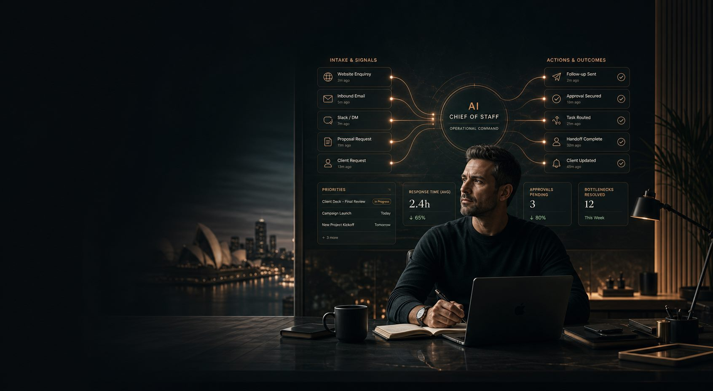

Northbridge OperationsDone-for-you Bottleneck Command Layer for founder-led Australian agencies.
The Last Bottleneck
Your Agency Still Runs Through You.
We install a command layer so routine work stops reaching the founder.
Done-for-you Bottleneck Command Layer for founder-led Australian agencies.
routing
follow-up
exceptions

inbox
handoffs
approvals
normal route
founder only
Escalation gateOnly decisions with risk, ambiguity, or real client impact should rise here.
Founder anchor
The founder becomes the exception desk, not the general traffic handler.
If this sounds familiar
Execution still runs as if the founder is the operating system.
This is for agencies where operational motion still waits on founder attention.
01
Requests, follow-ups, and approvals still pass through you before moving forward.
02
Team members wait on you for non-strategic decisions.
03
Execution depends on your memory and inbox timing.
04
Context is split across chats and lost in handoffs.
05
Work slows whenever your availability becomes the bottleneck.
You are not short of strategy. You are paying a strategic tax on drag.
When routine traffic stays with the founder, speed, follow-through, and trust all degrade at once.
A
Every manual handoff compounds delay.
B
Follow-up gaps become recoveries, not growth.
C
Escalation decisions arrive late, then get costlier and more stressful.
Not a new app. A bounded founder-routing architecture.
We install one operating layer that takes routine work off the founder and keeps judgment where it belongs.
intake
routing rules
follow-up
exceptions
1
Source nodes: requests, follow-ups, approvals, and handoffs enter in a structured way.
2
Routing lanes: routine work moves to the team without touching founder bandwidth.
3
Escalation gate: only ambiguous, risky, or high-impact cases rise upward.
4
Status beacons: the founder sees ownership and risk without becoming the traffic layer.
The founder stops catching normal flow and starts seeing only the work that deserves judgment.
Bounded scope. Clear handoff. No endless AI project drift.
We map the bottleneck, define the decision boundary, and install the system with a clean handoff.
Bottleneck Audit
Workflow Map
Install + Handoff
Included
+
A scoped 60-minute Bottleneck Audit.
+
Workflow map across intake, routing, follow-up, and escalation.
+
Installation of a bounded routing system.
+
Founder and team handoff with decision rules and ownership boundaries.
Not included
-
Open-ended AI consulting.
-
Ongoing day-to-day operations management.
-
Unlimited tool or agent builds outside the scoped workflow.
=
A clear implementation path with founder-only escalation logic.
The last step to reclaim founder attention
Book Your Bottleneck Audit.
If your agency still routes too much normal work through the founder, this audit shows what comes off, what stays, and what should only escalate by exception.